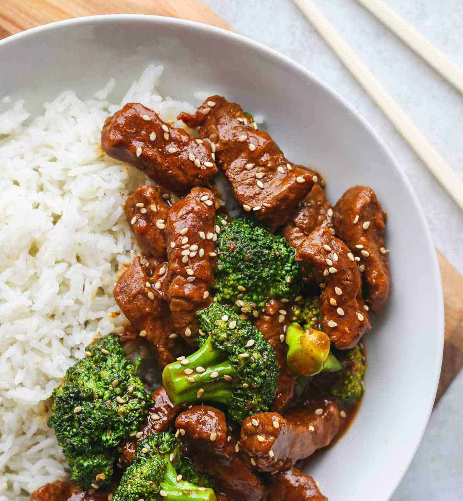

Beef and Broccoli
Prep Time: 10 mins
Cook Time: 10 mins
Total Time: 20 mins
Servings: 4 servings
Skip the takeout and whip up a fast and fresh recipe for easy beef and broccoli in 20 minutes or less.
Serve with some rice and enjoy! Makes about 4 servings.
Ingredients
- 3 Tablespoons cornstarch, divided
- 1 pound flank steak, cut into thin 1-inch pieces
- 1/2 cup low sodium soy sauce
- 3 Tablespoons packed light brown sugar
- 1 Tablespoon minced garlic
- 2 teaspoons grated fresh ginger
- 2 Tablespoons vegetable oil, divided
- 4 cups small broccoli florets
- 1/2 cup sliced white onions
Instructions
- In a large bowl, whisk together 2 tablespoons cornstarch with 3 tablespoons water. Add the beef to the bowl and toss to combine.
- In a separate small bowl, whisk together the remaining 1 tablespoon cornstarch with the soy sauce, brown sugar, garlic and ginger. Set the sauce aside.
- Heat a large nonstick sauté pan over medium heat. Add 1 tablespoon of the vegetable oil and once it is hot, add the beef and cook, stirring constantly until the beef is almost cooked through. Using a slotted spoon, transfer the beef to a plate and set it aside.
- Add the remaining 1 tablespoon of vegetable oil to the pan and once it is hot, add the broccoli florets and sliced onions and cook, stirring occasionally, until the broccoli is tender, about 4 minutes.
- Return the beef to the pan then add the prepared sauce. Bring the mixture to a boil and cook, stirring, for 1 minute or until the sauce thickens slightly. Serve with rice or noodles.